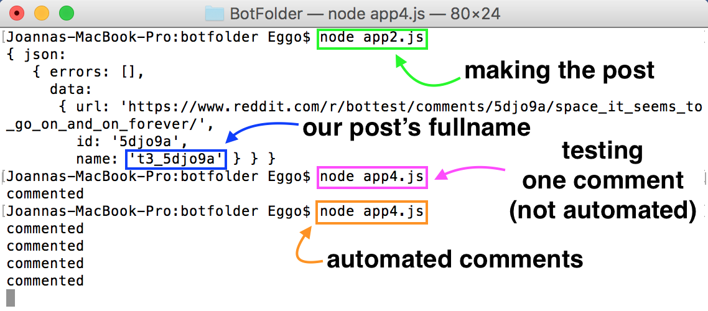
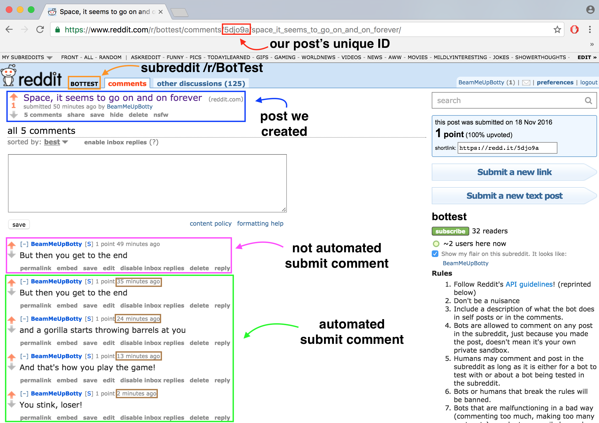

Now that we know how to use the API and Snoocore, let's put it all together and build a bot. First, we'll make a post on /r/bottest. Then, our bot will make a comment to that post every 11 minutes. Without further ado, let's take a look at the code.
To make the post, we reuse the code from earlier on Making a Post. The code for the automated comments every 11 minutes is shown below.
The initialization and login process is the same as before. We check the scope of /api/comment using the API documentation. For the submitComment function, we use the appropriate parameters and set their values according to the documentation. Not much new here.
To automate the function, we use Javascript's setInterval() method, which calls a function after a specified interval. Since the intervals have units of milliseconds, we pass the value 11 * 60 * 1000, which equates to 11 minutes. While it is possible to make the intervals smaller, beware of posting too often as Reddit will issue an error message and temporarily prevent your bot from commenting.
There are many, many ways to turn a script into a bot. We can automate our bot using an application. On Macs, one can automate a task using Automator. On Windows, one can schedule a task and repeat it using Task Scheduler. If you're absolutely gung ho about using Javascript, there are even libraries dedicated to scheduling and automating tasks.
Let's take a look at the result of all our efforts!
p
p
And that's all there is to it! Using the concepts covered in this tutorial, you can make a bot that posts something new every 10 minutes to some poor, unsuspecting Subreddit. You can go through a Subreddit and upvote every post on the first page every hour on the hour. You can do anything! Head over to Reddit's API documentation to see what you can code up.
p